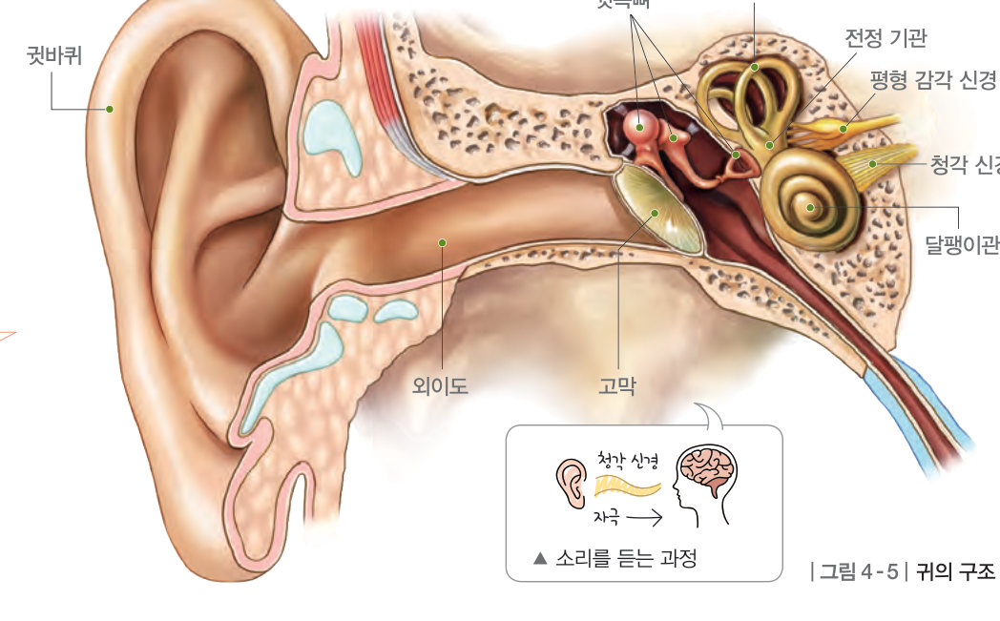
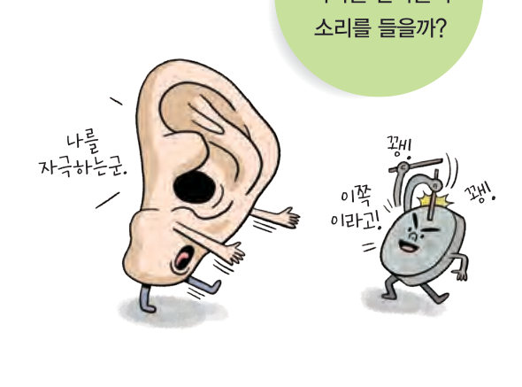
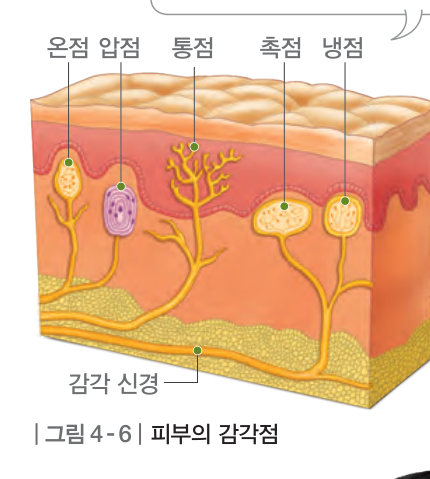
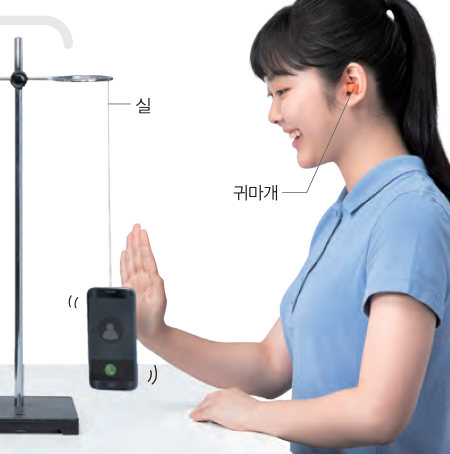

귀에서 어떤 자극을 받아들여 소리를 들을까? 소리 여행으로 소리가 고막, 귓속뼈, 달팽이관을 거쳐 뇌까지 가는 길을 따라가고, 평형 감각과 피부의 감각점까지 알아보자.
일상생활에서 들을 수 있는 다양한 소리는 물체의 진동으로 발생한다. 우리는 귀에서 공기 등을 통해 전달된 소리를 자극으로 받아들여 느끼는데, 이러한 감각을 청각이라고 한다.
귀는 그림 4-5와 같이 귓바퀴, 고막, 귓속뼈, 달팽이관 등으로 이루어져 있다. 소리가 귓바퀴에서 모여 외이도를 지나 고막에 도달하면 고막이 진동한다. 이 진동은 귓속뼈를 지나면서 증폭되어 달팽이관으로 전달된다. 그러면 달팽이관에 있는 청각 세포가 진동 자극을 받아들이고, 이 자극이 청각 신경을 통해 뇌로 전달되어 소리를 듣게 된다.
한편, 귀는 몸의 회전이나 움직임 등을 느끼는 평형 감각도 담당한다. 몸이 회전하면 반고리관에서, 몸이 움직이거나 기울어지면 전정 기관에서 자극을 받아들인다. 이 자극이 평형 감각 신경을 통해 뇌로 전달되어 몸의 균형을 유지할 수 있다.
우리는 피부에서 열, 접촉, 압력 등을 자극으로 받아들여 차가움, 따뜻함, 촉감, 눌림, 통증을 느끼는데, 이러한 감각을 피부 감각이라고 한다. 사람의 피부에는 냉점, 온점, 촉점, 압점, 통점의 감각점이 분포한다. 감각점에서 자극을 받아들이면 이 자극이 감각 신경을 통해 뇌로 전달되어 피부 자극을 느끼게 된다.


| ⑴ 얼음이 손에 닿았다. | |
| ⑵ 따뜻한 찜질팩을 댔다. | |
| ⑶ 바늘에 찔렸다. | |
| ⑷ 털이 살짝 스쳤다. | |
| ⑸ 무거운 가방끈이 어깨를 눌렀다. |
| ⑴ 소리에 진동하는 얇은 막 | |
| ⑵ 청각 세포가 있어 자극을 받아들이는 부분 | |
| ⑶ 귓바퀴에 모인 소리가 귓속으로 이동하는 부분 | |
| ⑷ 몸이 회전하는 것을 자극으로 받아들이는 부분 |
| 평가 기준 | 스스로 평가 |
|---|---|
| 귀의 구조와 기능을 알고, 소리를 듣는 과정과 평형 감각을 느끼는 과정을 설명할 수 있다. | |
| 피부 감각을 느끼는 과정을 설명할 수 있다. |